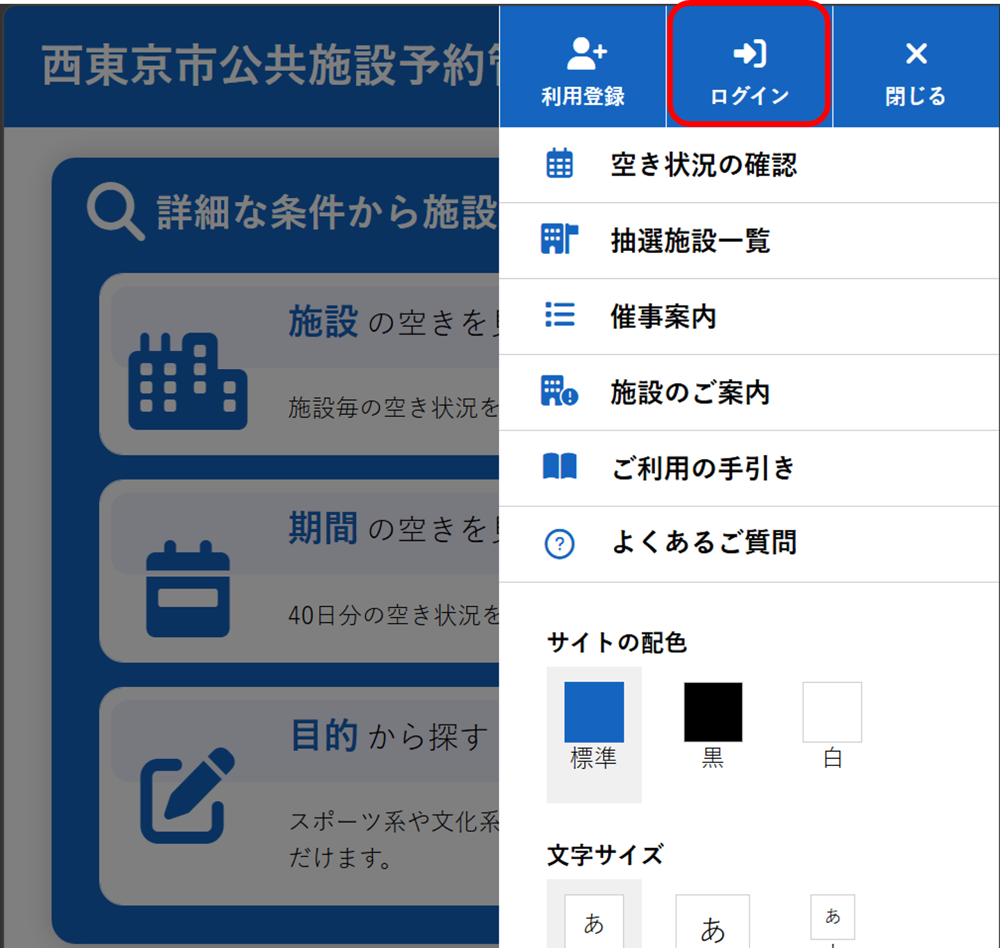
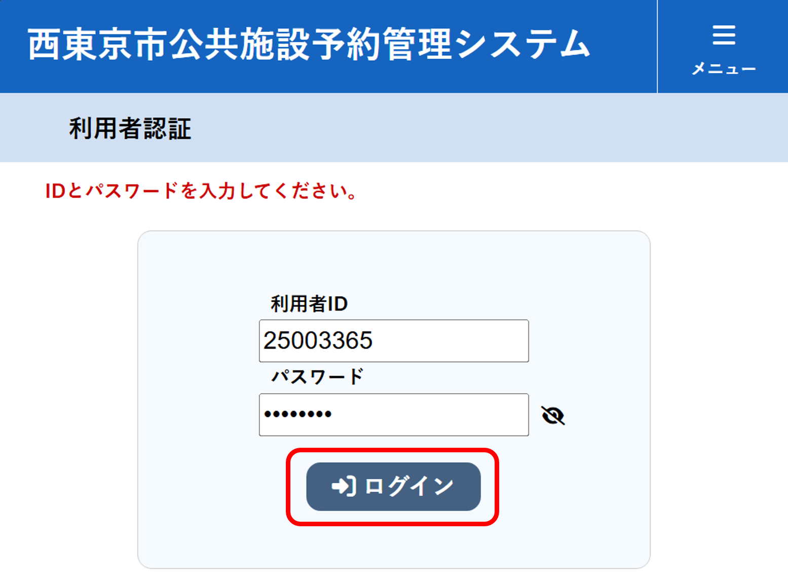
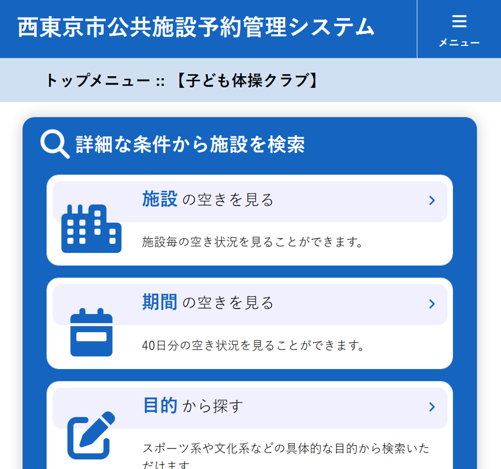
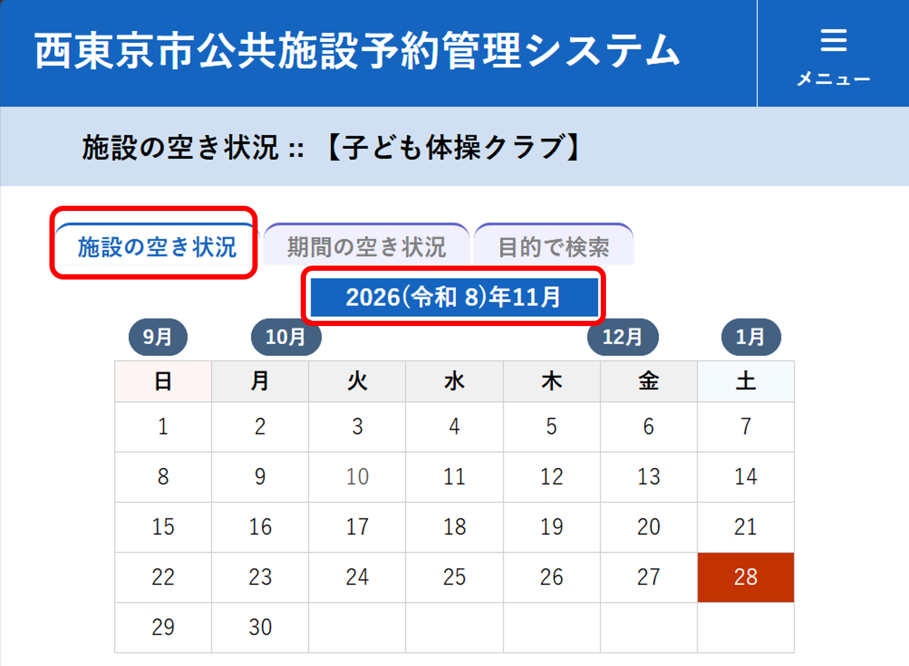
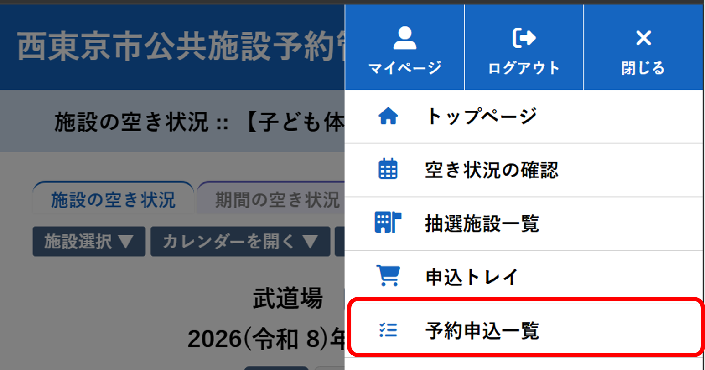
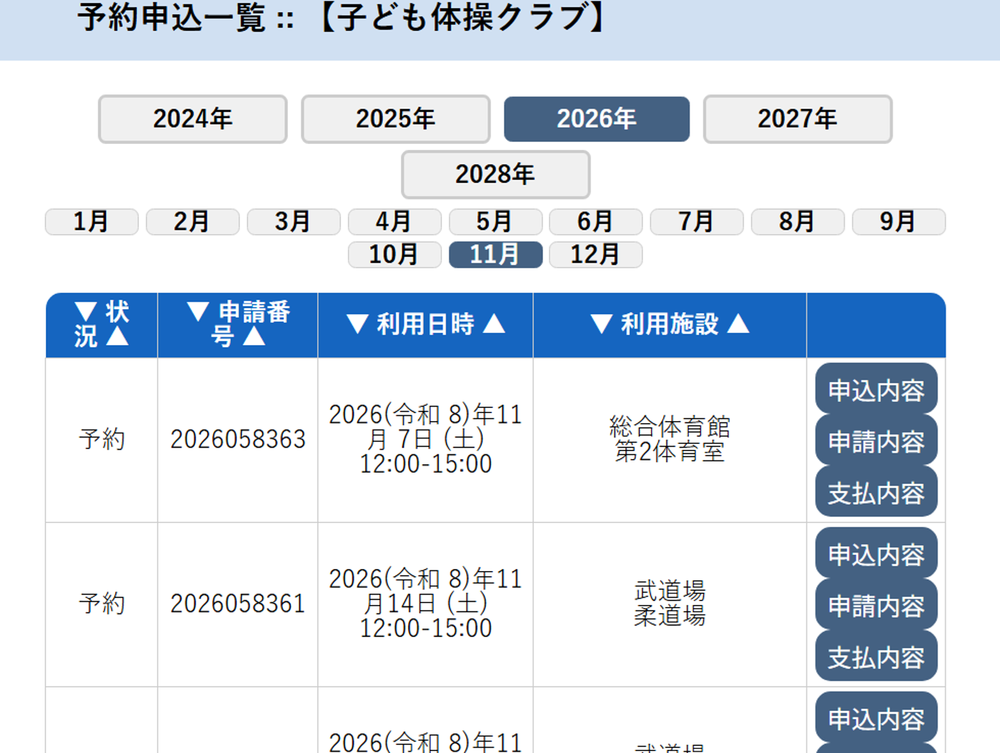
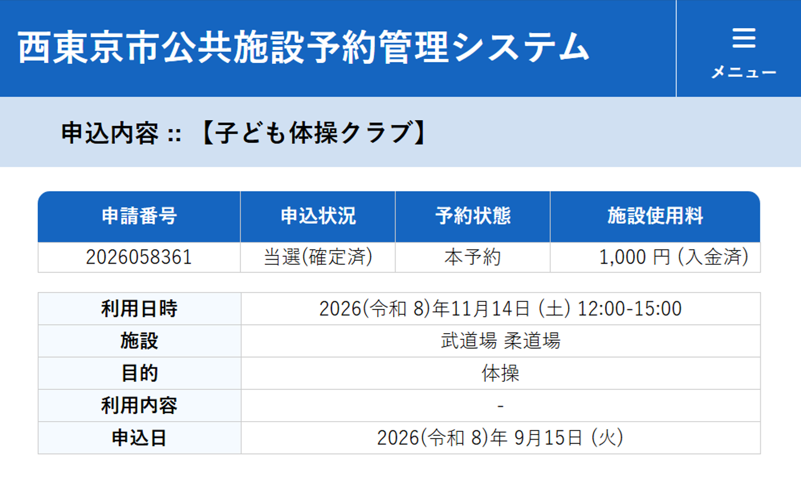

別紙：施設予約システム操作手順
子ども体操クラブの施設予約手順です。
初めて予約担当になった方は、STEP1から順番に実施してください。
STEP1 ：１日～15日
ログイン画面を開く
トップページ右上の「ログイン」を押します。

赤枠で囲まれた「ログイン」を選択します。
STEP2 ：１日～15日
利用者認証
利用者IDとパスワードを入力してログインします。

利用者ID：25003365
パスワード：yato7777
STEP3 ：１日～15日
施設の空きを見る
ログイン後、「施設の空きを見る」を選択します。

施設ごとの空き状況を確認できます。
STEP4 ：１日～15日
利用したい月を選択する
施設の空き状況画面で利用したい月を選択します。

予約したい月の空き状況を確認してください。
STEP5 ：１日～15日
施設を予約する
システムメニューにしたがって、対象月の土曜日の
12：00～15：00 の枠を予約します。
※月MAX ５ 予約が可能
●年間予定を確認して、谷戸小NG日は、複数施設予約する
●武道場は比較的空いている
施設の優先順位
- 武道場
- 総合体育館
- きらっと
※総合体育館ときらっとに優先順位の差はありません。どちらも第二候補として、空き状況や利用条件に応じて予約してください。
STEP6 ：17日～月末
予約申込一覧の確認
抽選結果を確認するため、メニューから「予約申込一覧」を開きます。

抽選結果は17日以降に確認します。
STEP7 ：17日～月末
当選結果を確認後 → 決済
利用日時・施設を確認し、「申込内容」または「支払内容」を押します。

利用日時と施設に誤りがないことを確認し、決済を行い申し込みを確定さてください。
STEP8 ：随時
申込内容を確認する
予約内容が確定していることを確認します。

必ず以下を確認してください。
- 申込状況：当選（確定済）
- 予約状態：本予約
- 施設使用料
- 利用日時
- 利用施設
★ 最重要ポイント ★
抽選申込みだけでは予約完了ではありません。
抽選申込み
↓
当選確認
↓
利用料支払い
↓
予約完了
支払いを忘れると予約は自動キャンセルになります。
STEP9 ：利用日１週間前までに
谷戸小学校実施日の施設キャンセル
窓口で返金手続きを行います。
注意！：練習場所決定から、あまり時間がありません。
以下の窓口にて。※予約画面が紙に印刷してなくてもOK。
以上です、不明点あれば聞いてください。